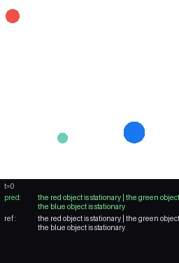
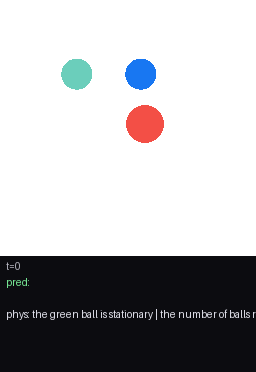
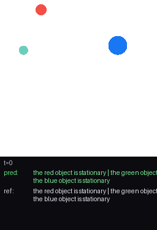
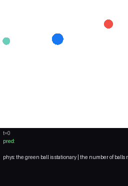
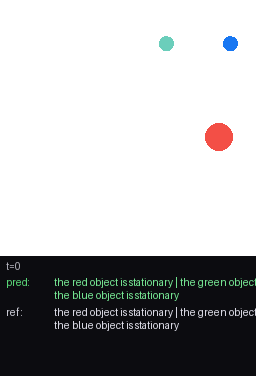
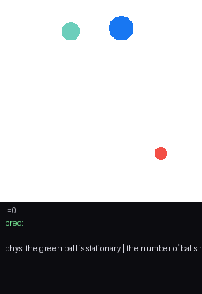
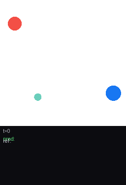
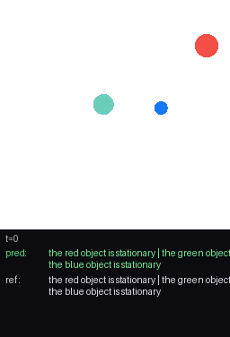
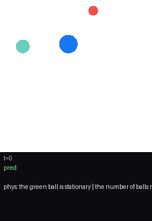
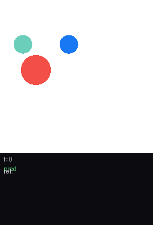

The TOKW v0.4.0 neuro-symbolic world model on PHYRE, evaluated against
PHYRE's exact physics ground truth (no VLM anywhere): atomic propositions are computed
directly from featurized_objects — per-object motion direction, speed trend, and
contacts, finite-differenced from real positions. Only the latent GRU and the truth transformer
are trained.
Same model, two references: the original VLM-labelled reference (Qwen labelling held-out clips — the same oracle that trained it) vs. PHYRE's exact physics ground truth.
| metric | VLM reference | ground truth | what it tells us |
|---|---|---|---|
| transition fraction | 0.22% | 4.1% | GT captures ~19× more real changes; the VLM reference was sparse |
| persistence baseline | 0.998 | 0.959 | real room above the copy baseline now exists |
| autoregressive rollout | 0.976 | 0.929 | raw accuracy still below persistence under both |
| transition accuracy | 0.594 | 0.600 | the genuine signal — robust to the reference (~60%) |
| frame-change precision | 0.067 | 0.417 | VLM punished real changes it never labelled |
| frame-change F1 | 0.125 | 0.579 | against physics, change-detection is far better calibrated |
Takeaway: the VLM-as-reference eval undersold the model. Measured against real physics, its predictive power is modest but genuine and concentrated at transitions — and there is no circularity, since the reference no longer comes from the same oracle that produced the training labels.
| timescale | Kripke states | transitions | rules |
|---|---|---|---|
| event | 52 | 93 | 100 |
| long | 33 | 37 | 100 |
| scale | formula | reading | conf | supp |
|---|---|---|---|---|
| event | AG(GT_13afc6bf1b -> GT_3e077a1359) | if 'the blue object is stationary', then 'the red object is stationary' | 1.00 | 52 |
| event | AG(GT_13afc6bf1b -> GT_462f2e4db8) | if 'the blue object is stationary', then 'the green object is stationary' | 1.00 | 52 |
| event | AG(GT_13afc6bf1b -> GT_9a00cd121d) | if 'the blue object is stationary', then 'the red object moves left' | 1.00 | 52 |
| event | AG(GT_3e077a1359 -> GT_13afc6bf1b) | if 'the red object is stationary', then 'the blue object is stationary' | 1.00 | 52 |
| event | AG(GT_3e077a1359 -> GT_462f2e4db8) | if 'the red object is stationary', then 'the green object is stationary' | 1.00 | 52 |
| event | AG(GT_3e077a1359 -> GT_9a00cd121d) | if 'the red object is stationary', then 'the red object moves left' | 1.00 | 52 |
| event | AG(GT_462f2e4db8 -> GT_13afc6bf1b) | if 'the green object is stationary', then 'the blue object is stationary' | 1.00 | 52 |
| event | AG(GT_462f2e4db8 -> GT_3e077a1359) | if 'the green object is stationary', then 'the red object is stationary' | 1.00 | 52 |
| event | AG(GT_462f2e4db8 -> GT_9a00cd121d) | if 'the green object is stationary', then 'the red object moves left' | 1.00 | 52 |
| event | AG(GT_9a00cd121d -> GT_13afc6bf1b) | if 'the red object moves left', then 'the blue object is stationary' | 1.00 | 52 |
| event | AG(GT_9a00cd121d -> GT_3e077a1359) | if 'the red object moves left', then 'the red object is stationary' | 1.00 | 52 |
| event | AG(GT_9a00cd121d -> GT_462f2e4db8) | if 'the red object moves left', then 'the green object is stationary' | 1.00 | 52 |
| long | AG(GT_13afc6bf1b -> GT_3e077a1359) | if 'the blue object is stationary', then 'the red object is stationary' | 1.00 | 33 |
| long | AG(GT_13afc6bf1b -> GT_462f2e4db8) | if 'the blue object is stationary', then 'the green object is stationary' | 1.00 | 33 |
| long | AG(GT_13afc6bf1b -> GT_9a00cd121d) | if 'the blue object is stationary', then 'the red object moves left' | 1.00 | 33 |
| long | AG(GT_3e077a1359 -> GT_13afc6bf1b) | if 'the red object is stationary', then 'the blue object is stationary' | 1.00 | 33 |
| long | AG(GT_3e077a1359 -> GT_462f2e4db8) | if 'the red object is stationary', then 'the green object is stationary' | 1.00 | 33 |
| long | AG(GT_3e077a1359 -> GT_9a00cd121d) | if 'the red object is stationary', then 'the red object moves left' | 1.00 | 33 |
| long | AG(GT_462f2e4db8 -> GT_13afc6bf1b) | if 'the green object is stationary', then 'the blue object is stationary' | 1.00 | 33 |
| long | AG(GT_462f2e4db8 -> GT_3e077a1359) | if 'the green object is stationary', then 'the red object is stationary' | 1.00 | 33 |
| long | AG(GT_462f2e4db8 -> GT_9a00cd121d) | if 'the green object is stationary', then 'the red object moves left' | 1.00 | 33 |
| long | AG(GT_9a00cd121d -> GT_13afc6bf1b) | if 'the red object moves left', then 'the blue object is stationary' | 1.00 | 33 |
| long | AG(GT_9a00cd121d -> GT_3e077a1359) | if 'the red object moves left', then 'the red object is stationary' | 1.00 | 33 |
| long | AG(GT_9a00cd121d -> GT_462f2e4db8) | if 'the red object moves left', then 'the green object is stationary' | 1.00 | 33 |
These are high-confidence co-occurrence patterns over the VLM labels, reported in CTL syntax — a description of the labelled dynamics, not a verified model.









